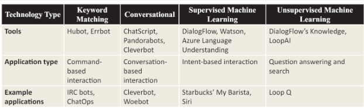

Choices and Decisions Chatbots provide us
When adopting an AI chatbot for public service delivery, organisations face critical choices between basic and advanced chatbots, each with their own technical capabilities and impacts. Basic chatbots, using a rule-based approach, offer structured and semi-structured interactions by linking user queries to predefined responses. They are easier to implement, but provide limited functionality. Meanwhile, advanced chatbots use machine learning to generate dynamic responses, adapt over time, and personalize user interactions. This approach offers greater flexibility and effectiveness but requires significant investment in technology and training. Evaluating these choices involves considering the specific service needs, potential public value, and the agency’s capacity to manage the complexity and costs associated with advanced AI solutions.
The machine learning chatbot, also known as the artificial intelligence (AI) chatbot, automates interactions and provides tailored responses to users. To choose the most appropriate chatbot technology for a given organization, it is crucial to understand the distinctions and capabilities of the different types of chatbots available, including keyword matching, conversational, and machine learning chatbots. Our focus is AI chatbots, exploring their advantages, challenges, and applications, while briefly discussing keyword matching and conversational chatbots.
Keyword matching chatbots are the simplest form of chatbot technology. They respond based on predefined rules after recognizing specific words or phrases. While this method requires minimal technical sophistication and can simulate a basic understanding of user input, it is highly limited in scope and flexibility. These types of chatbots are best suited for simple, command-based tasks within controlled environments, such as internal organisational tools where users are familiar with the commands. The primary drawback of keyword matching chatbots is that they cannot understand natural language, making them unsuitable for complex interactions or tasks requiring nuanced interpretation.
Conversational chatbots or chatterbots, aim to engage users in dialogue using natural language processing (NLP). Through the use of extensive databases of user interactions, these chatbots can simulate conversation. Examples include Cleverbot and Mitsuku, which engage users primarily for entertainment or casual conversation. Although conversational chatbots encourage user engagement and allow social interaction, they often lack the ability to manage directed, task-oriented interactions effectively. They can also be less reliable for professional or service-oriented applications due to their reliance on user-generated content.
Machine learning chatbots represent the pinnacle of chatbot technology, as they offer greater accuracy and relevance when interpreting and responding to user input. They are categorised into supervised and unsupervised learning chatbots, each with different benefits and challenges.
The supervised machine learning chatbots are trained on large datasets containing examples of user interactions. This training allows them to accurately identify user intents and provide appropriate responses. Tools such as IBM Watson, Google DialogFlow, and Microsoft Azure Language Understanding are commonly used to develop these chatbots. ML chatbots have the advantage of being able to handle complex tasks and provide precise, context-aware responses. For example, supervised machine learning chatbots can assist users with HR related queries by recognising how they might ask about their next paycheck and delivering the appropriate information.
However, the effectiveness of supervised ML chatbots heavily depends on the quality and quantity of training data. However, lack of or poor quality of training data can lead to errors and poor performance. Additionally, smaller organisations may lack the expertise and resources to develop and maintain supervised machine learning chatbots.
In contrast to supervised machine learning chatbots, unsupervised machine learning chatbots are emerging technologies that are designed to overcome some limitations of supervised chatbots.
Instead of relying on predefined training data, these chatbots learn from existing information sources, such as FAQ pages or documentation to generate responses. In this way, the system can handle a wider range of queries without requiring extensive manual training. Examples of tools for building unsupervised ML chatbots are such as DialogFlow’s Knowledge plugin and LoopAI’s Loop Q.
Unsupervised ML chatbots have an advantage over supervised chatbots in terms of rapid deployment and adaptation since they are able to extract relevant information autonomously. However, this technology is still in its early stages and it may not be as accurate and reliable as supervised machine learning chatbots. It can be challenging to ensure the chatbot interprets and responds to user enquiries accurately, as well as to control the quality of responses generated from different information sources.
In conclusion, machine learning chatbots provide organizations with advanced, adaptive, and intelligent interaction capabilities. In comparison to keyword matching and conversational chatbots, machine learning chatbots offer the most powerful solutions for complex and dynamic user interactions. The choice between supervised and unsupervised machine learning chatbots depends on the organisation's specific needs, resources, and goals. Machine learning/AI chatbots are likely to become increasingly important for customer service, personal assistance, and a variety of other applications as technology continues to advance.
Made 30 May 2024thanks to W3C for tutorial and adapted code from Style Examples
also thanks to WDN for HTML and CSS resources and any adapted code snippets from Mozilla Developer Network